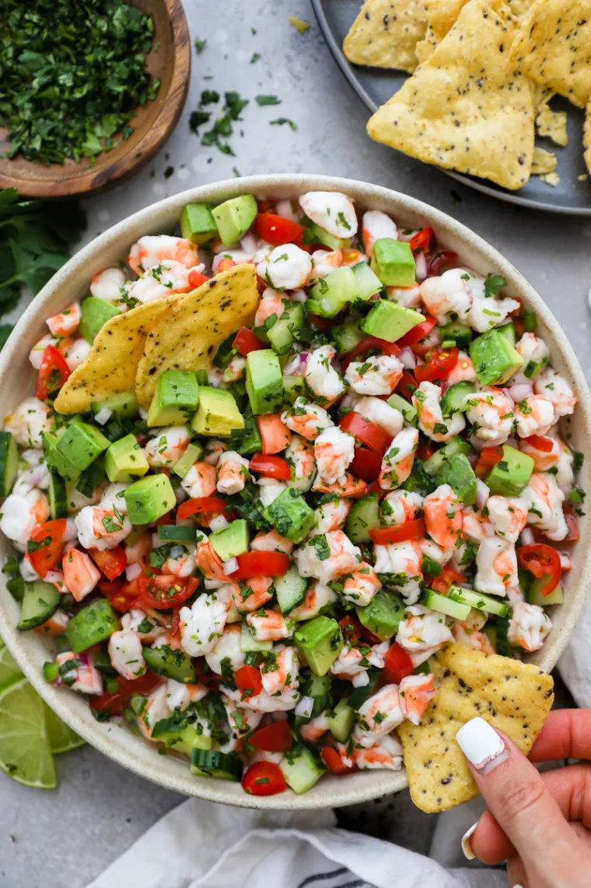
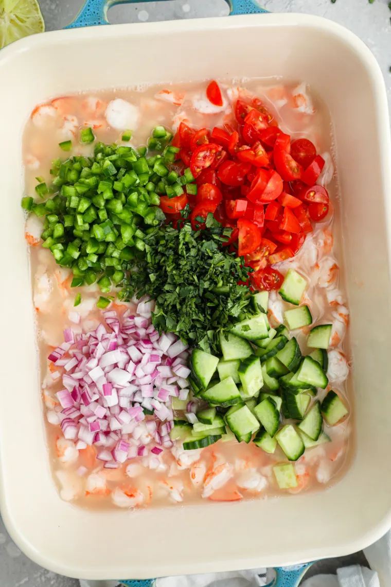

The Best Shrimp Ceviche
Sourced from here.
This shrimp ceviche is the perfect summer meal! Featuring citrus marinated shrimp, lots of fresh veggies, & creamy avocado! Serve it as an appetizer with chips or top it over tostada shells for an easy dinner!

This easy shrimp ceviche recipe only requires a handful of ingredients and tastes so good! It’s a light and refreshing meal that’s perfect for summer or can easily be served as an appetizer!
Ingredients for Shrimp Ceviche
- Raw Shrimp: We use medium to large shrimp for our ceviche. (21-25 count) I wouldn’t suggest using smaller shrimp (like bay shrimp) as they can have a very different taste and texture to them.
- Tomatoes: We always use cherry or grape tomatoes for our ceviche.
- Persian cucumber: They're smaller in size and have a thinner skin than regular cucumbers. (Plus less seeds too!) English cucumbers would also work for this recipe.
- Onion: Red Onions work the best for this recipe!
- Cilantro: Use the leaves and stems for maximum flavor!
- Jalepeno: Always deseed your jalepeno! (We want flavor - not the heat.)
- Limes: An essential ingredient for every ceviche recipe! It's hard to tell exactly how many limes you'll need (some are juicier than others), but we'll usually use about 8-12 Limes.
- Avocado: Optional but definitely recommended! You can dice it and mix it into your ceviche or mash it and spread it over tostadas.

How To Make Shrimp Ceviche
- Prepare your shrimp. Rinse your shrimp and remove the tail shells. Then cut each shrimp into bite sized pieces.
- Marinate. Add your chopped shrimp in a large baking dish and pour your lime juice over the top. (You'll need enough lime juice to completely submerge your shrimp.) Then cover the dish with plastic wrap and leave it out at room temperature for 1 hour. Once the hour is up, transfer your dish to the refrigerator to continue cooking for 1-2 more hours.
- Add your chopped veggies. While the shrimp is marinating, cut the rest of your ingredients and add them to the dish 15-30 minutes before you're ready to serve.
- Serve! Serve your ceviche with tortilla chips, tostada shells, mashed avocado or guacamole if desired.